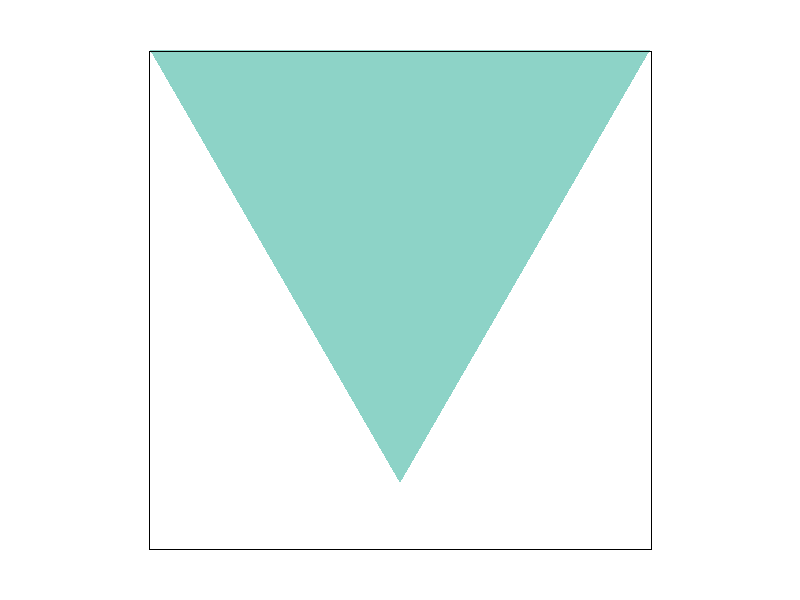

Overview
In summary, we learned about how to rasterization and do texture mapping as well as different sampling methods: super sampling, pixel sampling and level sampling to reduce aliasing effects. All these technologies contribute to the same purpose: wonderful visual rendering!
The most interesting things in this project is to combine different anti-aliasing technologies and figure out the final result. It helps us better understand the effect and trade-offs between these different methods and how to better combine these sampling methods together!
Section I: Rasterization
Part 1: Rasterizing single-color triangles
We rasterized our triangles in the following method:
- We wrote a function to judge whether a point is inside the triangle. We utilized the Three Line Tests method that was introduced in our class.
- We leveraged the given vertices to find the bounding box of the triangle and iterated all the points inside the bounding box. The sample positions are located at half-integer coordinates in screen space. Our algorithm is the same as the one that checks each sample within the bounding box of the triangle.
- We then utilized the fill pixel function to fill in the pixels which are inside the triangle with their corresponding colors.
Here is our generated result figure 1 for your reference:
|
|
Part 2: Antialiasing triangles
Why is super sampling helpful?
- There might be aliasing happening when we directly do rasterization, it will cause jaggies or moire pattern which will decrease the quality of our rasterization. The aliases are created by insufficiently sampled high-frequency signals, two high-frequency signals are indistinguishable at a given sampling rate. Supersampling can help us filter out high-frequency signals by using a one pixel-box filter. This is the reason why super sampling is helpful.
Our modifications
- We leveraged a box filter inside one pixel and averaged the results as the pixel's final result. For every single pixels, we divided the pixels into n small boxes, the n is the given sampling rate. We divided our x and y to sqrt(n) to get the n boxes. Then we calculated the color information of these boxes. In this task, we judged it by whether the center of the box is inside the triangle. The we filled our sample_buffer. After filling sample_buffer, we just counted the average of every pixel to rgb_framebuffer_target and got our super sampling result.
Here is result on basic/test4.svg (Figure 2) for your reference:
|
|

|
|
|
Explanation:
- In this picture, their is a skinny triangle corner which means high frequency signals. So at the low sampling rate, the aliasing effect is very obvious, you can even observe the jaggies with out zooming in, and the edge is broken. But with the increasing of the sampling rate, the aliasing effect decreases and the edges become much more smooth and continuous.
Part 3: Transforms
We made our cubeman model to do a very famous gesture in the last year's best game Elden Ring. The gesture name in the game is called "the gesture of elden ring". Here is a screenshot from the game and our generated result (Figure 3) for your reference:
What we did:
- In order to realize the "the gesture of elden ring", it is very easy to figure out that we first need to rotate our arms by a certain degree. In our experiment, first we changed our initial translation to help move our arms a little bit higher, then we rotated +- 60 degree after the initial translation. After rotating the arms, it is now time for us to rotate our short arms (hands). So we also rotated our hands by a certain degree and we changed the translation to help us connect our torsos together!
Section II: Sampling
Part 4: Barycentric coordinates
Explaination of Barycentric coordinates:
- Suppose now we are going to do texture mapping and our meshes are triangle meshes . Now we have the color information on the vertices and we also want to know the color information inside each triangle mesh. Ideally we should have smoothly varying color across this surface and the color can be know from where the pixels locate inside this triangle. Barycentric coordinate can help us do that! It calcuates the weight of color information on the vertices and nicely interpolates the values among the surface! Here is figure 4 that can explain this:
|
|
You can easily notice that barycentric coordinates can help us get smooth color information inside the mesh! Here is the result of svg/basic/test7.svg (figure 5) for your reference:

|
Part 5: "Pixel sampling" for texture mapping
Explaination of Pixel sampling:
- Every pixels that we are going to do texture mapping have their corresponding locations on our texture map, for example (u, v). But the location may not be integer (texture sampling pattern not rectilinear or isotropic), so we need to find a method to get the color information by some interpolation methods. This can also be understood as a "texture magnification" strategy.
How we implement it:
- For the nearest method, we directly use the round() function provided by C++ to help us to find the nearest sampling point in the texture map and for bilinear, we find 4 nearest points (4 pixels) around the sampling place and use *lerp* algorithm to get the final result.
The difference between "nearest" and "bilinear":
- The "nearest" method just uses the information from one pixel on the texture map and "bilinear" method uses four. So the bilinear method will give us much more smooth sampling result than nearest method. But however, the computational time for the bilinear method is higher than nearest method.
Here is the four results and the order is "nearest 1 sampling rate", "nearest 16 sampling rate", "bilinear 1 sampling rate", "bilinear 16 sampling rate" (figure 6):
|
|
|
|
|
|
Comment on the differences:
- It is very easy to figure out that the bilinear method outperforms nearest method in the selected area, no matter the sampling rate is 1 or 16. The nearest method will create uncontinuous sampling result on the longtitude line but bilinear method will provide smoother result. That is because texture sampling pattern is stretched and produce high frequency signal on texture places. So using the nearest method will synthesize jaggies. But after increasing sampling rate, both methods become better and bilinear method still creates better results.
Part 6: "Level sampling" with mipmaps for texture mapping
Explanation of level sampling:
- There might be texture minification during texture mapping, which means many texture pixels can contribute to one image pixels. At this time, we may have some aliasing results because of the high frequency in texture maps but low frequency signals in pixels' map. So at this time, we can use sampling strategies on texture map to filter out high frequency signals and predict antialiasing results. This is level sampling.
How we implemented it:
- We implemented level sampling by using method mipmap. We first computed pre-filter versions of our texture map with different level D. Every pixels on texture map should have their own level D. D decides the filter degree of the texture map. Given a single texture coordinate (u, v), we estimate its corresponding level D by using its neighboring screen samples. It is very easy to understand that if the distance between these two locations is large, that the level D should be large. After computing level D (D might not be integer), we can directly find the nearest integer level D as its final level but we can also use interplolation to get the value by leveraging the surrounding 2 D levels to get final result.
The tradeoffs between super sampling, pixel sampling, level sampling:
-
super sampling:
- time: low, need to do filter for every pixel in every case.
- memory usage: high, need to sample buffer to store super sampling result.
- antialiasing power: useful at nearly any cases.
-
pixel sampling:
- time: so-so or fast, nearest is very fast but bilinear is not.
- memory usage: low, just need to save some constants during computing.
- antialiasing power: useful at texture magnification. Bilinear > nearest
-
level sampling:
- time: fast, due to the storage of pre-filtered texture maps.
- memory usage: so-so, low consuming during running the algorithm but need to store the pre-filtered texture maps.
- antialiasing power: useful at texture minification. Bilinear > nearest
Here is the four results: (figure 7):
|
|
|
|
|

|
Explaination of our generated result:
- The picture is from a very famous game names Witcher 3: Wild Hunt.It is very easy to find some aliasing effects on L_ZERO and P_NEAREST, such as on the Geralt's armors and his sword. L_ZERO and P_LINEAR and L_NEAREST and P_NEAREST is nice that produce nice result without so many jaggies. But the result of L_NEAREST and P_LINEAR is too smooth that the character becomes unclear after zooming in.
Section III: Art Competition
Part 7: Draw something interesting!
In this part, we have made the pictures of Sierpinski triangles, which draws triangles in a recursive way. We made some mofications to its original method. First, let us show you some sample pictures of our created arts (Figure 8):
|

|
|
|
|
Explaination of our interesting pictures:
- We created an algorithm that can be run in a recursive manner: First, we have an initial big triangle and the color is the same (the colors of the pixels are in the same level). Then for every triangle, we got the middle points for each side of the triangles and divided the triangle into four small triangles. Then we plused one to the color level of the middle triangle and the color level of other 3 triangles remain the same. This is how we created our arts.
Our official website is host at https://cal-cs184-student.github.io/p1-rasterizer-sp23-idm/